Notes
Every note, on the shot it belongs to.
Capture review notes as fast as they're said, filed by shot, by day and by who gave them. Tick fixes off, and see what's still open before you send it back.
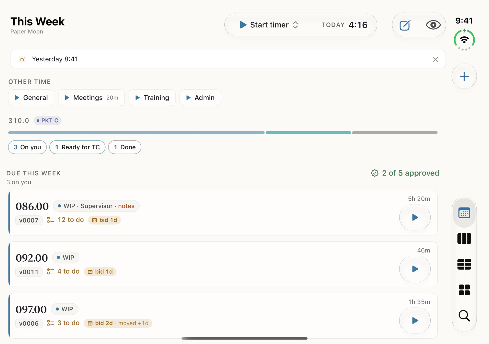
A production notebook for animation and VFX artists. Your shots, every note you were given, a timer that follows you, and a timecard that adds itself up. Private, and yours.
Beta Designed for iPad and iPhone Duo. At home on any iPhone. On your wrist with Apple Watch.
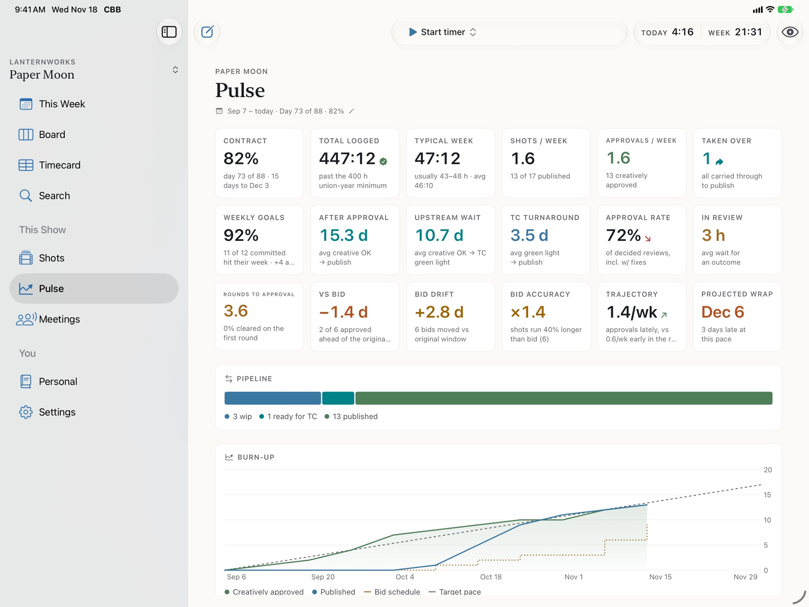
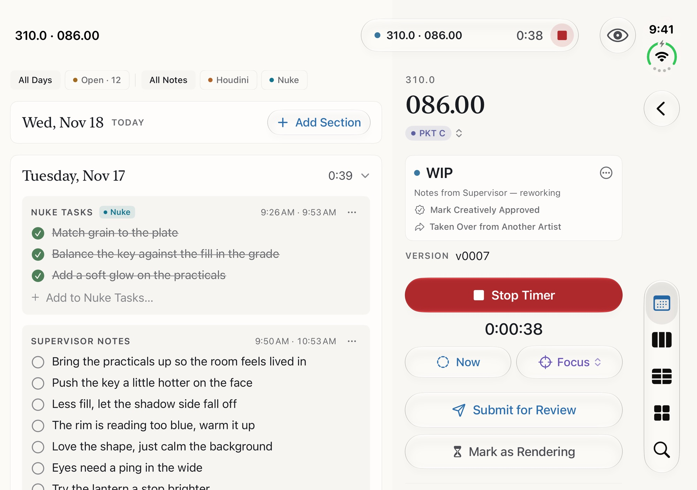
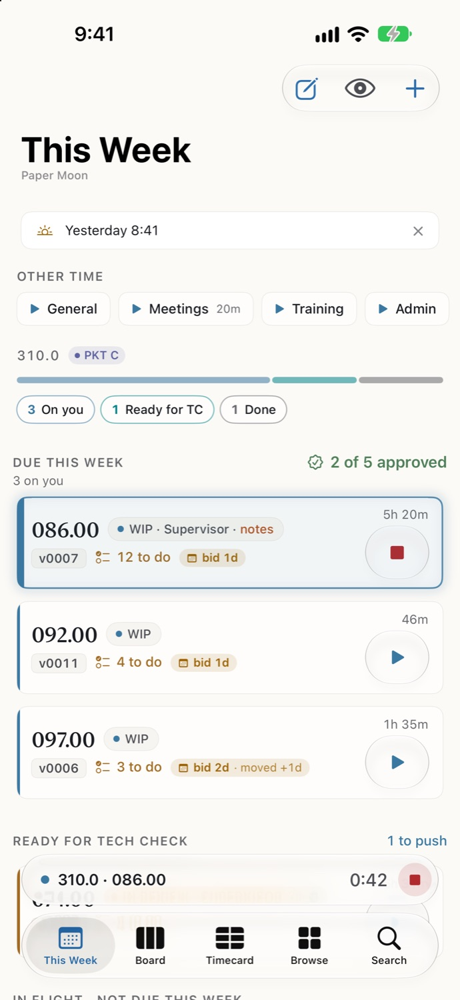
You know the feeling
Tick it off. There's always another.
One show, every screen
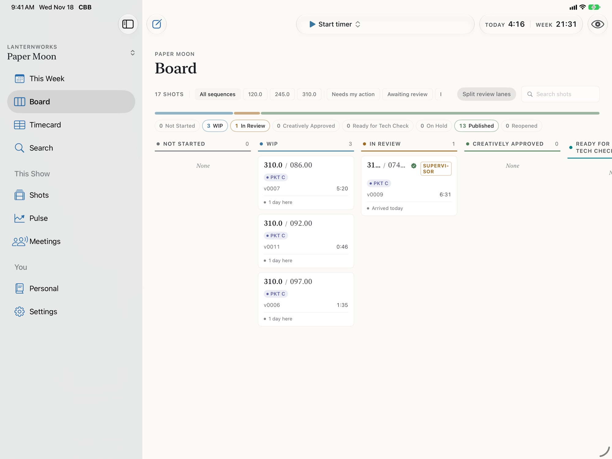
A sidebar, a full board you can pinch and drag, and a timecard grid for the whole week. Keyboard shortcuts for everything, and the timer always in the toolbar.
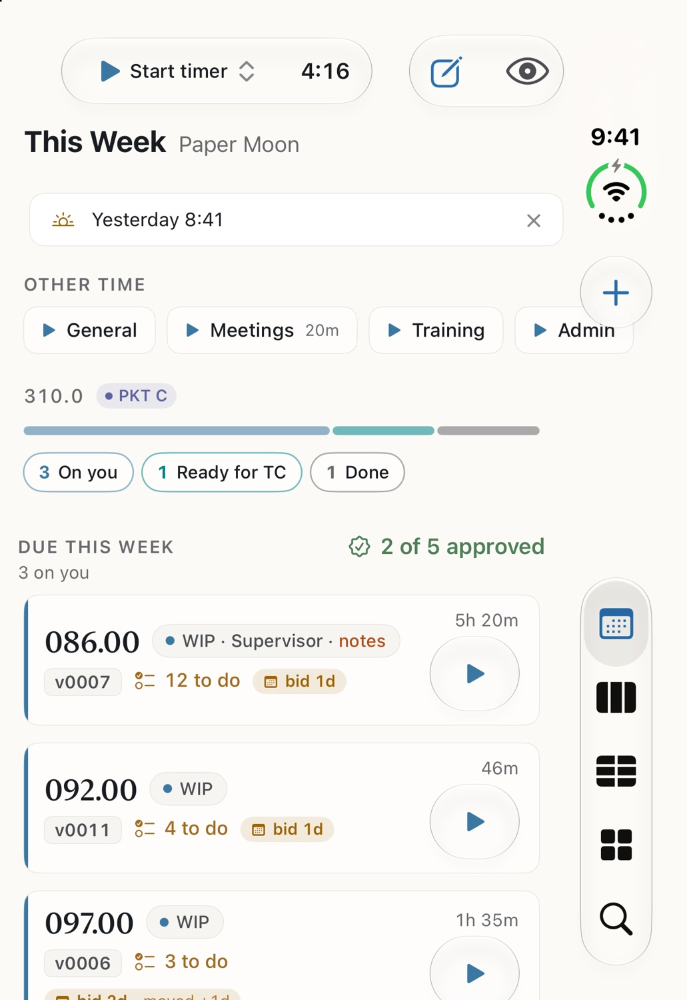
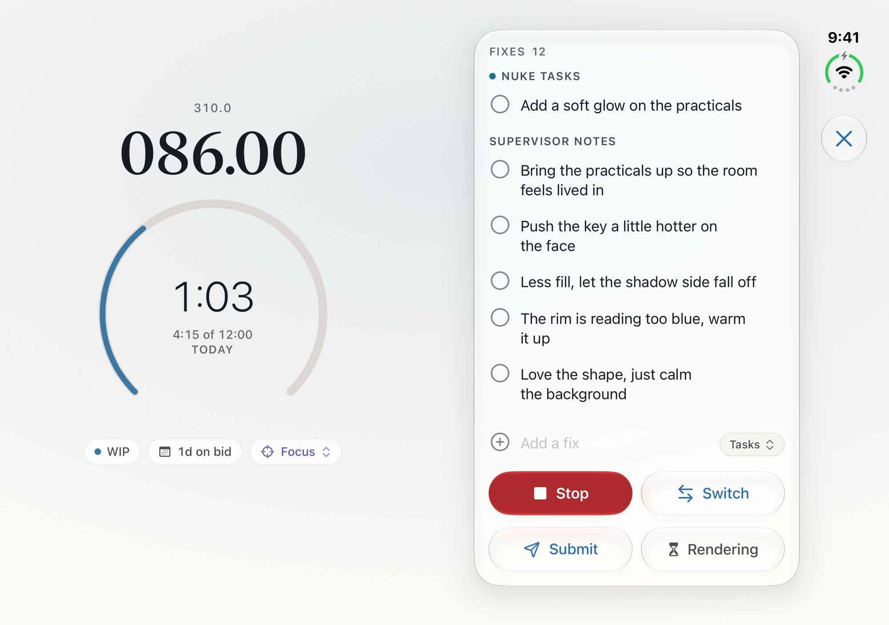
Folded, it's a pocket timer and a short list. Open, each half of the screen does its own job, with nothing important under the fold. Stand it on your desk and it becomes a clock with your to-do beside it.
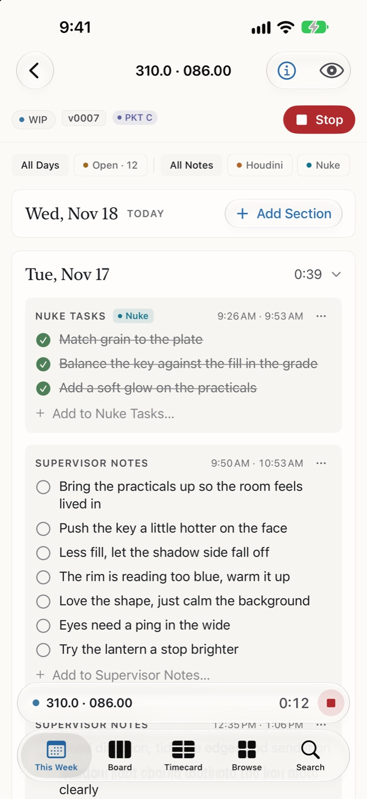
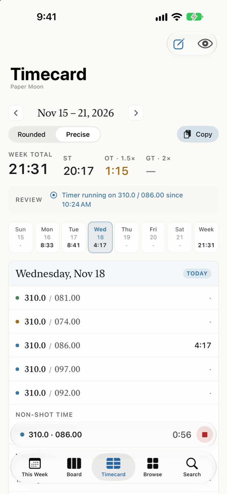
Every screen the iPad has, rethought for a phone, from the smallest iPhone to a Pro Max. The timer rides above the tab bar so Start and Stop are always under your thumb.
Illustration of the Watch app. It runs the same timer as the pill at the top of this page.
The Watch app mirrors your iPhone: see what's timing, stop it, switch shots or start a focus block without taking your phone out in dailies. Complications put the running timer and today's hours on your watch face.
Notes
Capture review notes as fast as they're said, filed by shot, by day and by who gave them. Tick fixes off, and see what's still open before you send it back.

Timer and focus
Start from the app, a widget, the Lock Screen, Siri or your wrist. The Now screen shows only the shot in front of you and its open fixes, with a focus block when you need an hour without looking up.
Timecard
Hours land on the right shot and day as you work. Straight time, 1.5× and 2× are split out by your own rules or The Animation Guild's, and the grid copies straight into the studio's form. It flags hours; it never calculates pay.
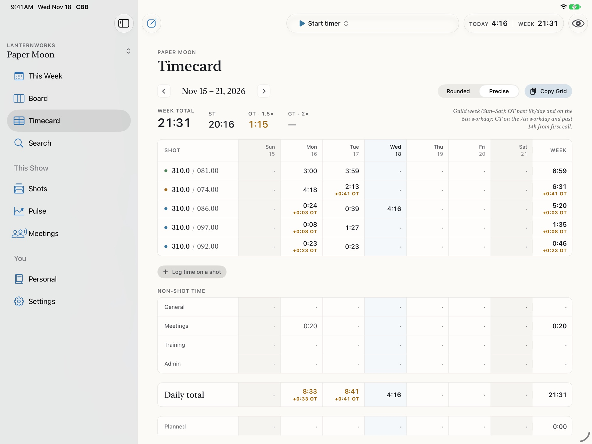
Pulse
How heavy each week really was. Where your hours went. How reviews landed: approved, approved with a fix, or sent back. And a clean reel breakdown and timecard when the show wraps.
3 in progress1 ready for final check13 published
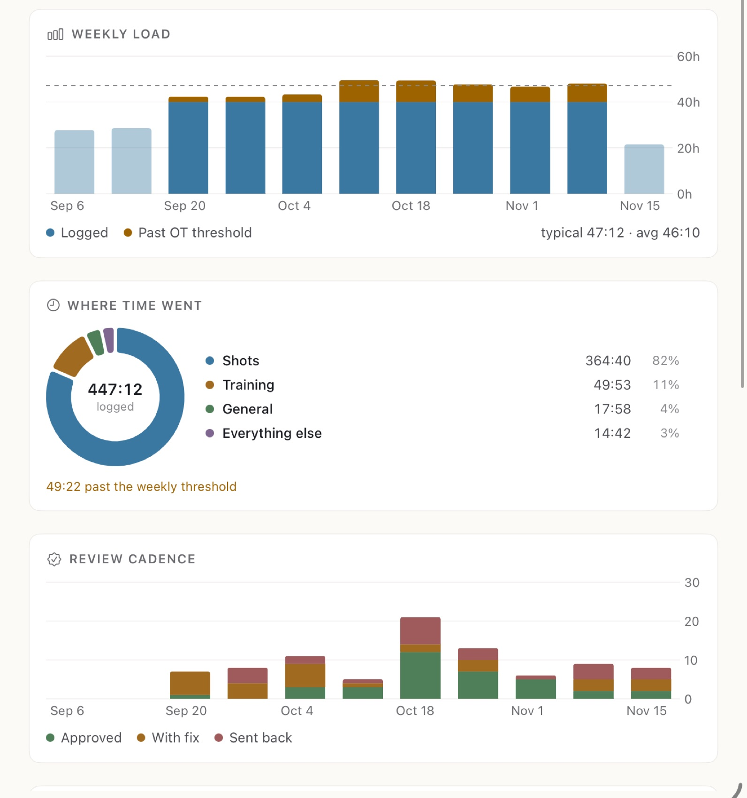
Private by design
Everything is stored on your devices. There is nothing to sign up for and nowhere for your notes to leak from.
Your iPad, iPhone and Watch stay in step through your private iCloud. Nobody else can read it, including the developer.
One tap hides every shot name and note on screen, for screen shares and open-plan desks.
Beta
Could Be Better was built by one lighting artist, on one show. The beta is for finding out where it doesn't fit yours: other studios, other pipelines, other timecards.
Requires iOS or iPadOS 27.1 or later. Free during the beta.
This is beta software. It ran a full show over a summer without losing anything, and it can still have bugs, including ones that lose data. It's provided as is, with no warranty, and you use it at your own risk. Export a backup regularly (it's one tap in Settings), and don't make it the only place something important lives. Beta terms
Questions
The app has no server and sends your notes nowhere. They live on your devices and, if you turn it on, in your own private iCloud. What you write down, and whether your studio allows personal note-taking tools, is still your call and your studio's policy.
No, on purpose. It doesn't touch studio systems or need IT's permission. It is your own notebook, the way a paper one would be.
No. It's designed to make the most of those screens, and it's a complete app on any iPhone running iOS 27.1 or later. The Apple Watch app is optional and comes with the iPhone app.
If you work on shots, get notes in reviews and fill in a timecard, yes. You name your own reviews and timers when you set up a show.
Set your own lines for 1.5× and 2×, or say you aren't paid overtime at all. Guild artists can pick how they're paid and switch off any rule that doesn't apply to their deal.
Nothing during the beta. Pricing after that isn't decided. Your data stays yours either way, and you can export all of it at any time.
CBB. You've had the note.